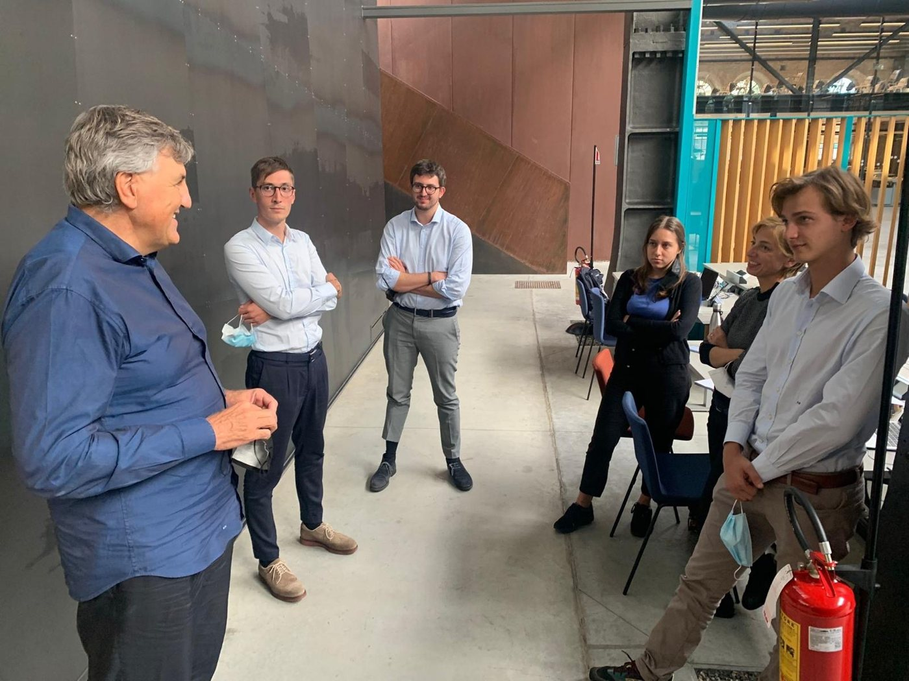
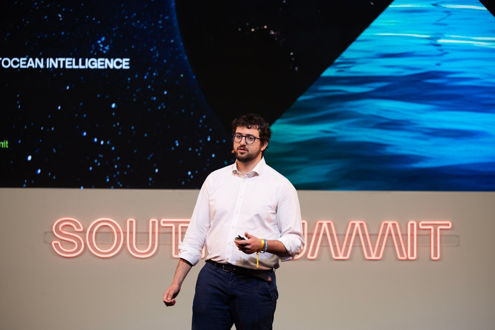

When I was eleven or twelve, my grandmother bought La Stampa every day. I would go straight to the stock listings and look for Enel. I'm not sure why Enel. Probably the TV ads. I just wanted to know where it had closed. Looking back, it would have been a decent investment.
I went to a classical high school and swam competitively at the same time.
022017
Turin, 2017 to 2020
Economics
I chose economics because I was curious about how the economy actually works, and because it covered a lot of ground. I enjoyed it a lot. The finance exams were the ones I liked most, so in my third year I specialized in financial intermediaries and insurance, and did an internship at a bank.
032020
Milan, 2020 to 2023
Moving to Milan
For my master's I moved to Università Cattolica in Milan. I wanted to leave my comfort zone, change city and university, meet new people, and be closer to where Italian finance happens.
Two experiences shaped those years. The first was an internship at LIFTT, where I saw startup investing from the inside for the first time. Among other things I worked on a market study of the nuclear sector for Newcleo, which has since listed on the Nasdaq.

With Stefano Buono, founder of newcleo, at OGR in Turin.
The second was JECatt, the junior enterprise of Cattolica. It is a non-profit run entirely by students who take the work seriously. We did consulting for startups, small companies and sometimes large ones, and billed around €100K. I spent two years in the audit team and became its vice head. What I remember most is being surrounded by very sharp people.
By the end I knew what my thesis would be about: how venture funds evaluate startups, both qualitatively and with numbers. I interviewed investors at LIFTT, Primo Ventures and P101 about the methods they really use.
042023
LINKS Foundation, Turin
Both sides of the table
My first job was at LINKS Foundation, an applied research center in Turin. I worked on technology transfer, meaning how research results can leave the lab and reach the market, and I scouted more than fifty startups with Politecnico di Torino and Intesa Sanpaolo Innovation Center.
At LINKS I met a colleague who was also one of the founders of Sunspeker. That is how I joined Sunspeker, as its first full-time employee. I helped raise a €690K round, most of it through an equity crowdfunding campaign that also brought in institutional investors, we went through the Silicon Allee accelerator in Berlin, and later I became a co-founder.
In 2024 I was also a fellow at Pulsar VC. For a few months I was on both sides at once, running due diligence on startups while preparing the fundraising round for one. Along the way I took courses with GoingVC to keep learning the investor side.
In 2025 I became the first full-time employee at MESPAC, a deeptech company working with satellite and AI data for offshore and maritime sectors. I lead go-to-market for maritime, I managed an €860K demonstration project with the European Space Agency, and the company sent me to a six-month accelerator in New York.

Presenting MESPAC at South Summit.
I like building my own tools. At MESPAC I set up an LLM-based workflow that turns customer call transcripts into structured insights for the product team. At Sunspeker I built the sales stack from scratch.
05
Outside work
The rest
Nobody in my family is an entrepreneur. My parents do something completely different, so this interest is one I found on my own.
I love Italian cooking, and one day I would like to open my own pizzeria.
I swam competitively for more than fifteen years and was ranked in the top seven nationally in my category.